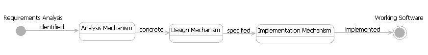

| Concept: Architectural Mechanism |
 |
|
| Related Elements |
|---|
What are Architectural Mechanisms?Architectural Mechanisms are common solutions to common problems that can be used during development to minimize complexity. They represent key technical concepts that will be standardized across the solution. Architecture mechanisms facilitate the evolution of architecturally significant aspects of the system. They allow the team to maintain a cohesive architecture while enabling implementation details to be deferred until they really need to be made. Architectural Mechanisms are used to satisfy architecturally significant requirements. Usually those are non-functional requirements such as performance and security issues. When fully described, Architectural Mechanisms show patterns of structure and behavior in the software. They form the basis of common software that will be consistently applied across the product being developed. They also form the basis for standardizing the way that the software works; therefore, they are an important element of the overall software architecture. The definition of architecture mechanisms also enable decisions on whether existing software components can be leveraged to provide the required behavior; or whether new software should be bought or built. The value in defining architecture mechanisms is that they:
An Architectural Mechanism can have three states: Analysis, Design and Implementation. These categories reflect the maturity of the mechanism's description. The state changes as successive levels of detail are uncovered during when you refine Architecturally Significant Requirements into working software. The categories are summarized in the table that follows. States of an Architectural Mechanism
For more information on these different types of mechanisms, see the attached concepts. Be aware that these states are frequently referred to themselves as Analysis, Design and Implementation mechanisms. These are synonyms and merely represent the architecture mechanisms in different states of development. The transition from one state to another can often be obvious or intuitive. Therefore, it can be achieved in a matter of seconds. It can also require more considered analysis and design, thus take longer. The important point here is that these categories of mechanisms apply to the same concept in different states. The only difference between them is one of refinement or detail. The following diagram illustrates the transition of Architectural Mechanisms from one state to another. State Machine for Architectural Mechanisms  What Information Should be Captured for Architectural Mechanisms?The information captured for each architectural mechanism category/state is different (though the information can be seen as refinements of each other):
When a mechanism is initially identified, it can be considered a marker that says to the team, "We are going to handle this aspect of the system in a standard way. We'll figure out the details later." As the project proceeds, the architectural mechanisms are gradually refined until they become part of the software. Analysis MechanismsAnalysis mechanisms are the initial state for an architectural mechanism. They are identified early in the project and represent bookmarks for future software development. They allow the team to focus on understanding the requirements without getting distracted by the specifics of a complex implementation. Analysis mechanisms are discovered by surveying the requirements and looking for recurrent technical concepts. Security, persistence and legacy interface are some examples of these. In effect, the analysis mechanism is where the requirements that describe architecturally significant topics are collated and brought together in a single list. This makes them easier to manage. Analysis mechanisms are described in simple terms:
Once the list of analysis mechanisms has been defined it can be prioritized and the mechanisms refined in line with iteration objectives. It is not necessary to develop the entire set of architecture mechanisms into working software in a single pass. It is often more sensible to develop only those mechanisms required to support the functionality to be delivered in the current iteration. Design MechanismsDesign mechanisms represent decisions about the concrete technologies that are going to be used to develop architectural mechanisms. For example, the decision to use an RDBMS for persistence. It's often no more complicated than that (though of course, the effort involved in making the decision can sometimes be quite complex). The decision on when to refine an architectural mechanism from an analysis state to a design state is largely arbitrary. Often there will be constraints on the project that force the decision on some of these issues. For example, there may be a corporate standard for databases which mean that the decision for the persistence mechanism can be made on day 1 of the project. On other occasions the decision may point to products that the project team has not yet acquired. If so, the decision needs to be made in time to enable the required products to be made available to the team. It can often be useful to develop some prototype code to prove that these decisions are sound. The architect should be confident that the technologies being selected are able to fulfill the requirements. The attributes captured against the corresponding analysis mechanisms should be used as criteria to prove the validity of the decisions. Implementation MechanismAn implementation mechanism specifies the actual implementation for the architectural mechanism (hence the name). It can be modeled as a design pattern or presented as example code. The best time to produce the implementation mechanism is usually when the first piece of functionality that needs it is scheduled for development. Architects and developers work together to develop this. For examples of the kinds of information that you might capture for a mechanism, see Example: Architectural Mechanism Attributes. |
| Concepts | |
|---|---|
| Examples | |
| Guidelines |
This program and the accompanying materials are made available under the |